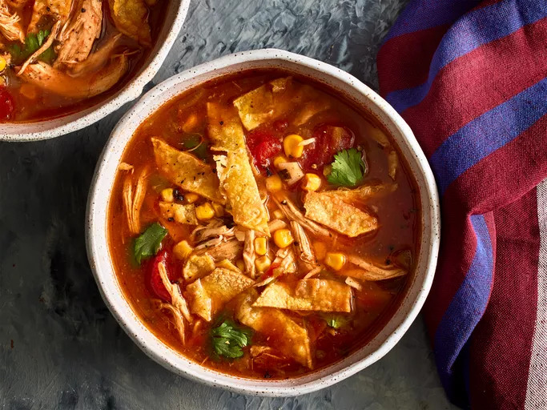

Chicken Tortilla Soup

Description
This chicken tortilla soup tastes better than anything you can get at a restaurant. It's healthy, too! Don't let the long list of ingredients fool you. All you do is dump everything into the slow cooker and walk away. Garnish with grated Cheddar, avocados, and a splash of fresh lime juice.
Ingredients
- 1 pound shredded, cooked chicken
- 1 (15 ounce) can whole peeled tomatoes, mashed
- 1 (4 ounce) can chopped green chile peppers
- 1 medium onion, chopped
- 2 cloves garlic, minced
Preparation
- Place chicken, tomatoes, enchilada sauce, green chiles, onion, and garlic into a slow cooker.
- Pour in water and chicken broth; season with cumin, chili powder, salt, pepper, and bay leaf. Stir in corn and cilantro. Cover and cook on Low for 6 to 8 hours or on High for 3 to 4 hours.
- When the soup is almost finished, preheat the oven to 400 degrees F (200 degrees C). Lightly brush both sides of tortillas with oil.
- Sprinkle tortilla strips over soup before serving.
Home Page